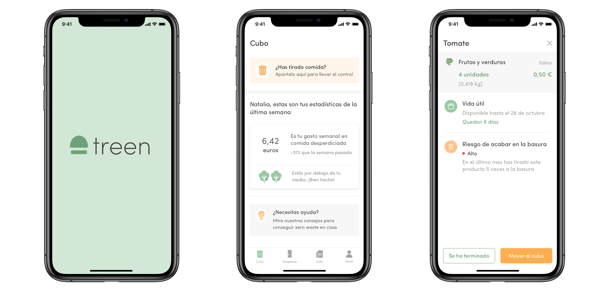
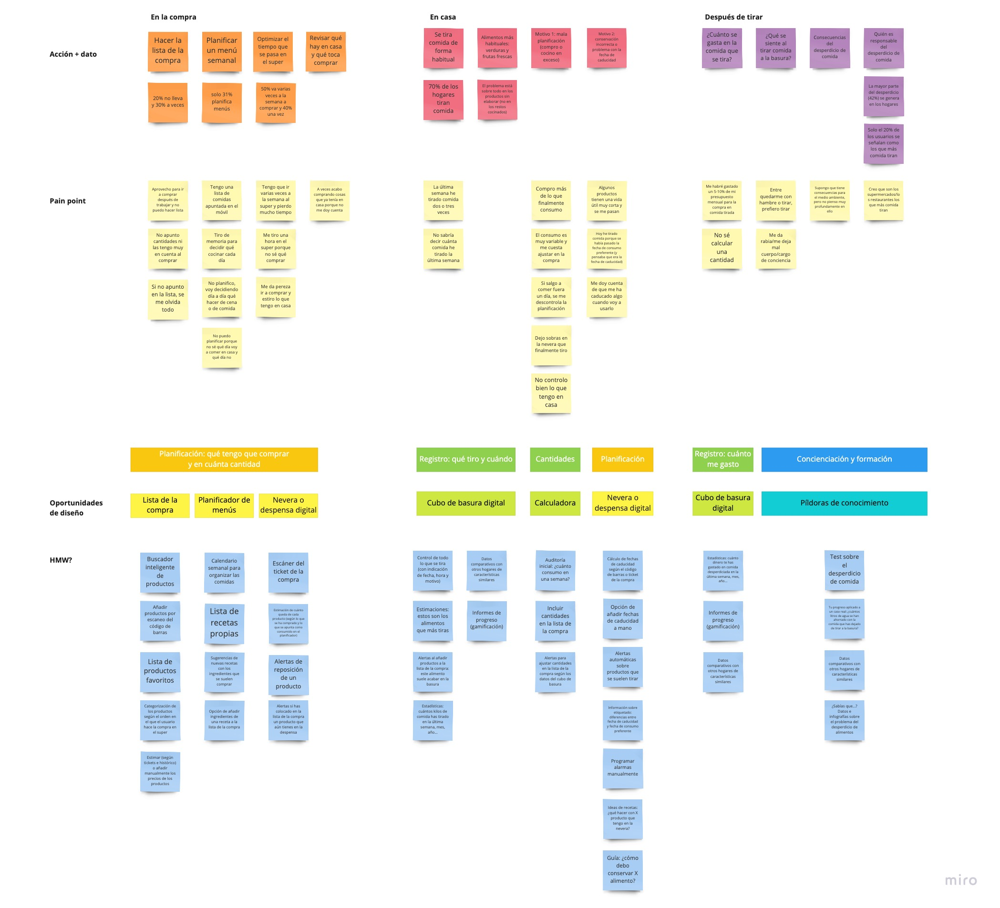
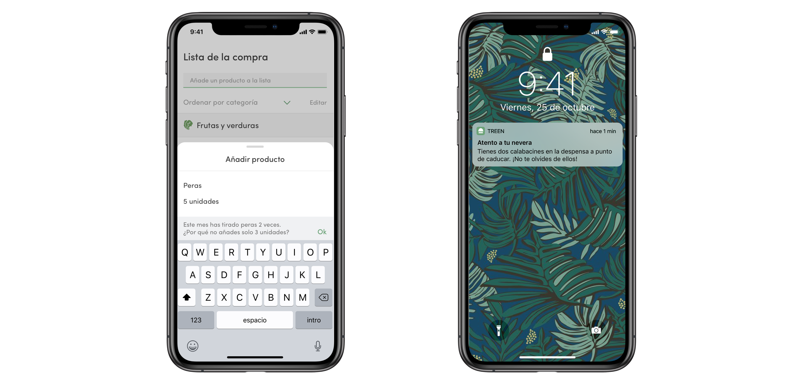
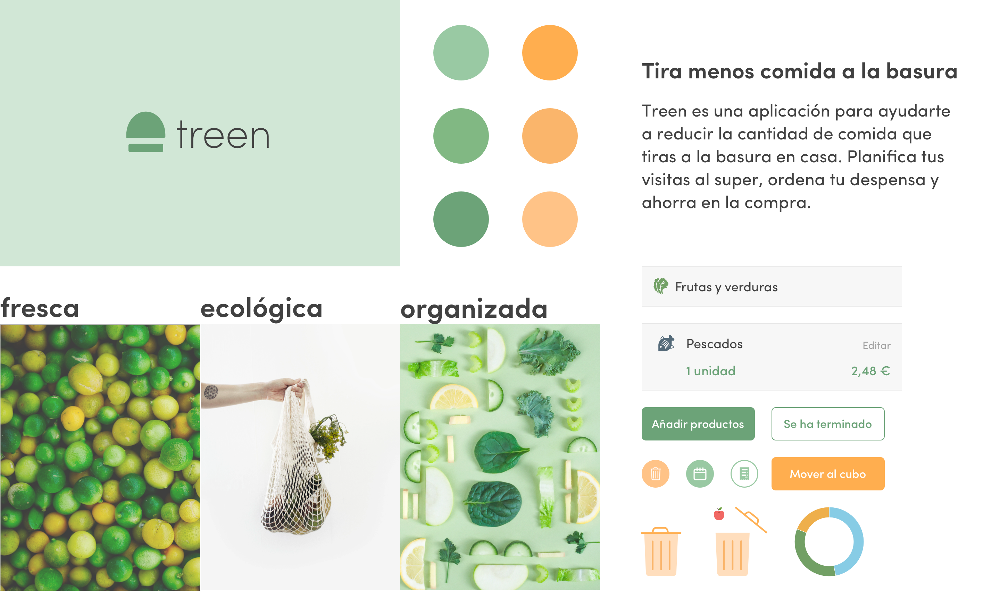

Datos básicos
Proyecto individual
Tiempo: dos semanas
Tipo: UX + UI
Herramientas: Sketch + InVision + Keynote
Cada año, los hogares españoles tiramos más de 1.300 kilos de comida a la basura. Este desperdicio genera un enorme impacto negativo en el medioambiente, pues utilizamos recursos para producir alimentos que nunca consumiremos. Pero también en nuestro bolsillo: ¿cuánto dinero se nos va en comida que después va a terminar en el cubo de la basura?
Para mi proyecto final del bootcamp de diseño UX/UI de Ironhack, decidí enfocarme en un gesto muy cotidiano (y potencialmente problemático) que todos realizamos a menudo en casa: abrir el cubo de la basura para tirar comida dentro. El problema del desperdicio de alimentos es más grave de lo que podemos pensar y se cuenta por toneladas: 1.300 millones acaban en la basura cada año en todo el mundo. Como consumidores, tenemos una gran responsabilidad para atajar esta situación... empezando por lo que ocurre en nuestros hogares.
Treen es una app que te ayuda a reducir esa cantidad de comida que tiras a la basura en casa. La solución se basa en una mejor planificación de la compra y en llevar un registro de lo que almacenas en la despensa y de lo que tiras al cubo. El objetivo es llevar el control de los alimentos que tienes (y cuándo caducan) y saber lo que tiras (y cuánto te cuesta), para así hacer listas de la compra mucho más inteligentes y ajustadas a lo que realmente consumes.
Para este proyecto conté con dos semanas de trabajo, en las que realicé todo el proceso UX y UI. Desde la investigación e identificación del problema, a la ideación y definición de la solución, para finalmente diseñar y prototipar el MVP. En todo momento realicé testeos con los usuarios, aplicando la metodología agile para refinar e iterar sobre la solución. Treen fue además el proyecto ganador del Hackshow que organiza Ironhack al finalizar cada bootcamp. Tuve la ocasión de presentarlo en el Google Campus de Madrid, ante casi 200 personas, que lo votaron como el mejor proyecto UX/UI del Hackshow.
Un problema de desconocimiento
Arranqué la investigación con una pregunta básica para los usuarios: ¿cuánta comida crees que has tirado a la basura en la última semana? Quería medir el nivel de conocimiento que los consumidores tienen sobre lo que ocurre con el desperdicio de comida en sus hogares. ¿Cuánto tiran, qué va a la basura, cuánto les cuesta y cuánto les preocupa?
Realicé 107 encuestas y 6 entrevistas en profundidad, en las que detecté una pauta común. Los usuarios son solo vagamente conscientes de lo que tiran a la basura (la mayoría tienen que hacer memoria para recordarlo y no suelen estar seguros), pero el gesto de abrir el cubo para tirar alimentos suele generar frustración y mala conciencia.
3 de cada 4
hogares tiran comida a la basura de forma habitual
Entre 1 y 3 veces
tiramos comida a la semana en la mitad de los casos
Frutas y verduras
son los alimentos que más a menudo tiramos
Hay, por lo tanto, dos problemas fundamentales:
01 Desconocimiento
No sabemos lo que tiramos, ni qué impacto tiene, ni cuánto dinero nos cuesta. Dos datos: el 30% de los usuarios no sabe cuánto dinero se gasta en comida que tira a la basura y solo 2 de cada 10 es consciente de que son los hogares los que más comida tiran (la mayoría señala a los restaurantes).
02 Planificación
La respuesta casi unánime de los usuarios cuando les pregunté por qué tiraban comida en casa es “porque me organizo fatal". Vamos al super y terminamos comprando más comida de la que realmente comemos. El 20% de los usuarios van a la compra sin lista y el 30% solo la lleva a veces.
La clave: planificar mejor la compra
La investigación con los usuarios me dio una pauta clara: la solución al problema no estaba en reutilizar o darle otra salida a lo que nos sobra (un concepto que sí utilizan, por ejemplo, apps que se centran en reducir desperdicio que se genera en los restaurantes). Al contrario, lo que los usuarios necesitaban era planificarse mejor para comprar menos comida y así tirar también menos cantidad de alimentos a la basura.
Esta mejora de la planificación la definí en tres momentos diferentes: al hacer la compra; al almacenar la comida y consumirla en casa; y al tirarla a la basura. Mediante el affinity diagram, puse en claro todos los datos de la investigación, identifiqué los pain points de los usuarios y comencé a detectar oportunidades de diseño y a idear posibles soluciones utilizando el método how might we…?
Con la ayuda del método MoSCoW, conseguí definir qué funcionalidades debería tener la app para esta primera versión y de cuáles podía prescindir. La solución debía girar en torno a tres ejes —comprar, consumir y tirar—, con un apartado adicional de educación.
El objetivo que persigue la app es trazar el círculo que sigue la comida desde que entra en casa hasta que termina en la basura. Se trata de hacer un seguimiento de todos los alimentos que compramos, de cómo los consumimos y de cuáles tiramos (y por qué lo hacemos). De este modo, si tengo el control de lo que consumo y sé lo que tiro, podré hacer listas de la compra mucho más realistas y, por lo tanto, acabaré desperdiciando menos comida.
Pero hacer este seguimiento planteaba dos riesgos desde el punto de vista de la usabilidad:
01 Demasiado esfuerzo
Anotar todo lo que se compra, lo que se consume y lo que se tira puede resultar muy tedioso para el usuario. Tanto, que la utilidad de la app puede quedar en entredicho si exige a sus usuarios un sobreesfuerzo.
Solución
Simplificar al máximo los procesos. Para registrar lo que se compra, por ejemplo, solo hay que hacer una foto al ticket de la compra. Y no es necesario apuntar todo lo que se come. Basta con anotar lo que se tira y la app ya actualiza cantidades y productos por sí sola.
02 ¿Dato exacto o estimación?
Si no se puede llevar el registro exhaustivo de todo lo que se compra, se come y se tira, es prácticamente imposible calcular el dato exacto de cuánto dinero se gasta cada usuario en la comida que acaba en la basura.
Solución
El usuario no necesita el dato exacto, le basta con una estimación. No se trata de una aplicación de banca, en la que necesitas saber hasta el último céntimo que te gastas. Para tomar conciencia de cuánto tiras, es suficiente con tener datos estimados.
Las tres funcionalidades básicas
Siguiendo ese esquema en tres ejes (comprar, consumir y tirar), Treen tiene tres funcionalidades básicas: una despensa virtual, un cubo de la basura y un panel de visualización de datos.

01 Despensa virtual
En primer lugar, Treen es una despensa. Un lugar en el que registrar todos los productos de alimentación que compras. Y de una forma muy sencilla. Basta con escanear el ticket de la compra y la aplicación identifica todos esos productos y los carga en tu despensa. Ahí los puedes consultar, ordenados por categorías. También se incluye una estimación de la fecha de caducidad o vida útil de cada producto, para que lleves el control de lo que tienes y de hasta cuándo lo puedes consumir.

02 Cubo de la basura
Treen es también un cubo de la basura. Porque si queremos reducir la cantidad de comida que tiramos, primero necesitamos saber cuánto y qué desperdiciamos. En la aplicación puedes llevar la cuenta fácilmente. Si has tirado algo, tan solo tienes que seleccionar el producto entre los que tienes guardados en tu despensa e indicar la cantidad para que la aplicación lo anote y lo añada al cubo.

03 Panel de datos
La suma del cubo y la despensa nos da una foto general de qué es lo que ocurre con el desperdicio de comida en tu casa. Puedes saber cuánto estás tirando y, sobre todo, ver una estimación de cuánto dinero te cuesta en proporción a lo que habitualmente te gastas en la compra. Además, te puedes comparar con semanas o meses anteriores (para ver si estás consiguiendo reducir lo que tiras) e incluso con hogares similares al tuyo. También puedes consultar el desglose de productos y así identificar qué alimentos tienen más riesgo de acabar en la basura.
¿Para qué sirven todos estos datos? En primer lugar, para planificar mucho mejor. Para hacer una lista de la compra inteligente que de verdad se ajuste a lo que consumes en casa. Por eso, si por ejemplo apuntas en la lista comprar 5 peras pero llevas varias semanas tirando peras a la basura, la aplicación utiliza esa información para sugerirte que ajustes la cantidad. Ir a comprar con una lista en la mano es importantísimo, pero con eso no basta: los expertos recomiendan incluir también las cantidades que queremos comprar de cada producto.
En segundo lugar, los datos nos sirven para aprovechar lo que ya tenemos en la despensa. La app incluye un sistema de recordatorios para los productos que, en tu caso, se han categorizado como de alto riesgo de acabar en la basura. Antes de que caduquen, Treen te envía un aviso para recordarte que los consumas.
Treen: identidad visual y de marca
Atributos
Treen es una marca fresca, ecológica y organizada. La marca se inspira en las frutas y las verduras frescas, precisamente los alimentos que queremos evitar que acaben en la basura.
Colores
El color primario es el verde menta y el secundario es el naranja mandarina. El verde se aplica en toda la app, mientras que el naranja se reserva solo para las funcionalidades que tienen que ver con el cubo.
Tipografía
El tipo de letra que se utiliza en Treen es SofiaPro. Se trata de una tipografía sin serifa, limpia y moderna. Así se facilita el uso de la app, en la que los usuarios tienen que utilizar largas listas de productos.